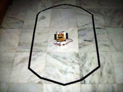
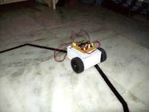

Electronics freak, hardware tinkerer, movie buff, android lover and blogger
Made a Line Following Robot using ATmega32. The sensors were a combination of photodiode and LED. The logic was that when the light is reflected back from a white surface, its intensity is larger than the light reflected from a black surface. So using this princple and proper thresholding, I made two accurate sensors and kept them facing the ground.

I used the Analog to Digital Converter of ATmega32 to take the value from sensors and compare it with threshold value. According to the value received, the controller sends the signal to the DC motors and keeps the robot on the line.
I programmed the microcontroller board using SPI method using serial port and MAX232 for level conversion.

The code is available on GitHub and a video of the robot in action is on Youtube.